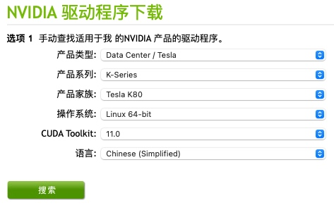
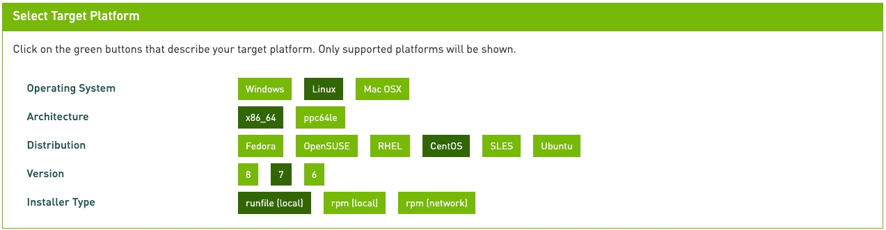

卸载CUDA
# 如果以前安装过 cuda 需要执行下面操作
# cd 到指定版本cuda的bin目录下
cd /usr/local/cuda-*/bin
# 执行卸载操作
sudo ./uninstall_cuda_toolkit_*.pl
# 或者是
sudo /usr/local/cuda*/bin/cuda-uninstaller
禁用nouveau
查看 nouveau 是否被禁用
# 有输出信息说明没有被禁用 lsmod | grep nouveau禁用方法
# 一下操作可能需要管理员权限 sudo vi /usr/lib/modprobe.d/dist-blacklist.conf
# 在打开的文件中添加
blacklist nouveau
options nouveau modeset=0
# 当前镜像备份
mv /boot/initramfs-$(uname -r).img /boot/initramfs-$(uname -r).img.bak
# 建立新的镜像
dracut /boot/initramfs-$(uname -r).img $(uname -r)
# 重启电脑
shutdown -r now
# 查看 nouveau 是否被禁用
lsmod | grep nouveau
配置安装环境
安装
gcc# 查看是否安装过 gcc gcc -v
# 没有安装执行下面命令
yum install gcc安装内核Headers和开发包
# 验证系统是否安装了正确的内核Headers和开发包 uname -r
# 没有的话可以安装
sudo yum install kernel-devel-$(uname -r) kernel-headers-$(uname -r)
# 检查安装版本，这里可能遇到的情况有kernel存在两个版本，这时候要卸载一个，确保存在的kernel与kernel-devel和kernel-header包的版本号一致
# 检查
rpm -qa|grep gcc
rpm -qa|grep kernel
# 卸载
rpm -e --nodeps 刚才查出来的name
下载并安装驱动
到官网下载合适的显卡驱动 https://www.nvidia.cn/Download/index.aspx?lang=cn
# 通过下面命令可以查看显卡信息 lspci | grep -i nvidia
# 通过下面命令可以下载 后面的链接换成自己需要的链接 wget https://cn.download.nvidia.com/tesla/450.80.02/NVIDIA-Linux-x86_64-450.80.02.run
# 如果是远程 centos 可以本地下载然后通过 sftp 上传执行下面命令安装
init 3 chmod +x 刚才下载的文件
sudo ./刚才下载的文件
# 通过下面命令查看是否安装成功
nvidia-smi可能遇到的错误
You appear to be running an X server; please exit X before installing
# 进入管理员用户（不是使用管理员权限）--这步很重要 su root # 打开 NVIDIA 安装日志文件
vi /var/log/nvidia-installer.log
# 里面会有一个 pid
# 复制 pid 然后执行
sudo kill -9 刚才复制的pid
# 执行下面语句继续安装
sudo ./nvidia.run
下载并安装 CUDA Toolkit
填写信息
根据给定的操作步骤操作
# 下面使用的是本地安装 # 下载文件
wget https://developer.download.nvidia.com/compute/cuda/10.2/Prod/local_installers/cuda_10.2.89_440.33.01_linux.run
# 运行文件
sudo sh cuda_10.2.89_440.33.01_linux.run注意
- 安装时取消驱动安装
配置环境变量
# 地址改为自己的 export PATH=$PATH:/usr/local/cuda/bin
export LD_LIBRARY_PATH=/usr/local/cuda/lib64
安装 cuDNN
- 下载 https://developer.nvidia.com/rdp/form/cudnn-download-survey 需要有nvidia用户才能下载（下载和cuda对应的版本）
解压刚才下载的文件
tar -xzvf 文件名cp 下面的文件到 /usr/local/cuda-*中
cp cuda/include/* /usr/local/cuda-*/include cp cuda/lib64/* /usr/local/cuda-9.0/lib64